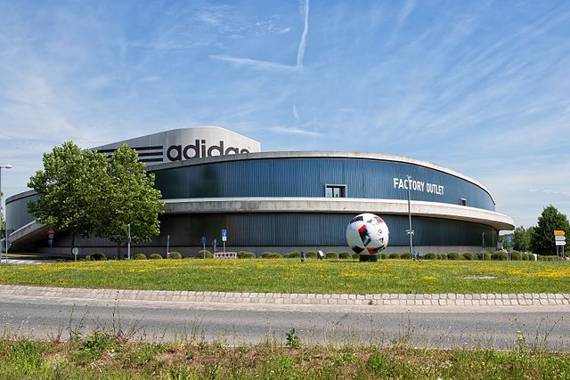

Adidas- один зі світових лідерів виробництва спортивних товарів
Адідас (нім. Adidas) — німецька компанія, один зі світових лідерів виробництва спортивних товарів. Заснована в 1924 році братами Дасслерами як «Dassler».
Сучасна назва з'явилася 1948 року, після того, як брати Дасслер розірвали відносини і утворили власні компанії. Adidas походить від перших трьох літер прізвиська молодшого брата Адольфа «Adi» і трьох перших літер прізвища (Das) засновника фірми Адольфа Дасслера, (Adolf Dassler). Старший брат Рудольф Дасслер за таким самим принципом назвав свою фірму Руда, а потім переіменував її в Puma.
Вираз «All Day I Dream About Sport» (цілий день я мрію про спорт), який колись вважався справжнім походженням назви, з'явився пізніше.
Короткий опис компанії
Berlin-Adidas World of Football 2.JPGAdidas 2010 World Cup gear 2.JPG Зараз компанія відповідальна за дистрибуцію продукції компаній: Adidas, Reebok, RBK & CCM Hockey, а також Taylor-Made Golf. Adidas є найбільшим виробником спортивних товарів у Європі і другим у світі, після американської компанії Nike. У 2009 році операційний прибуток компанії Adidas становив €10.38 мільярдів.
Шлях та історія розвитку компанії
- Короткий опис компанії
- Історія компанії
- 1920-ті. Народження компанії
- 1930-ті. Становлення компанії
- 1940-ті. Після Другої світової війни
- 1950-ті. Розвиток, гучні результати спортсменів у взутті компанії
- 1960-ті. Укріплення позицій
- 1970-ті. Повсюдне визнання, смерть Адольфа Дасслера
- 1980-ті. Криза
- 1990-ті. Повернення Адідаса
- 2000-ні. Розвиток і поглинання Reebok
- 2010-ті. Сьогодення
- Діяльність
- Скандали
- Цікаві факти